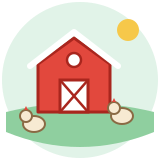

雞的祕密
三個󠇡祕密，快來看！
我們每天吃的蛋，是雞媽媽󠇡生的。你知道雞還有哪些祕密嗎？

第1個󠇡祕密
雞的身體
點點看雞的身體，看看每個󠇡地方叫什麼！
點雞的身體看看！
會發亮的地方都可以點喔。
雞冠󠇡
頭上紅紅的，像小帽子󠇡。
公雞的雞冠󠇡，通常比母雞的大。
肉垂
下巴󠇡下面也紅紅的，會晃來晃去。
天氣熱的時候，雞冠󠇡和󠇡肉垂可以幫雞散熱。
嘴巴󠇡
尖尖硬硬的，用來啄東西󠇡吃。
雞喝水的時候，會把頭抬高，讓水流進喉嚨。
爪子󠇡
可以抓地，把小蟲挖出來。
雞的腳有四根腳趾：三根朝前，一󠇢根朝後。
羽毛
讓身體暖暖的，也保護身體。
雞每年會換一󠇡次羽毛，叫做「換羽」。
雞沒有牙齒！
雞吃東西󠇡，是整個󠇡吞下去。
所以，雞會吞小石頭󠇡。小石頭󠇡在肚子󠇡裡的「砂囊」，幫忙把食物磨碎。
第2個󠇡祕密
雞會說話
雞會用不同的叫聲，告訴別的雞發生了什麼事。
咕咕咕，快來吃！
雞媽媽󠇡找到好吃的東西󠇡，會咕咕叫，叫小雞過來吃。
這種叫聲還沒有找到錄音。
小心！老鷹來了！雞看到天上的老鷹，跟看到地上的動物，叫聲不同。別的雞聽了，就知道要往哪裡躲。
喔喔喔！公雞叫了
公雞會大聲叫。牠們早上會叫，白天也會叫喔！
咯󠇡咯󠇡咯󠇡，我生蛋了！
雞媽媽󠇡生完蛋，常常會大聲咯󠇡咯󠇡叫。
第3個󠇡祕密
雞是恐龍的親戚
很久很久以前，地球上有恐龍。有些恐龍，慢慢變成了鳥。雞也是鳥，所以雞是恐龍的遠房親戚！
腳印好像！
雞的腳印有三根長長的腳趾，很多恐龍的腳印也是這樣。
都有羽毛！
雞身上有羽毛。有些恐龍的身上，也長󠇡著羽毛喔！
跟雞做朋友
-
輕輕摸，別追牠。
-
摸完雞，要用肥皂洗手。
-

去農場看雞，要跟著大人喔！
給爸爸媽媽看（比較詳細的說明）
- 砂囊：也叫肌胃。雞沒有牙齒，會主動吞下小石子或砂粒，存在肌胃裡；肌胃的厚肌肉收縮時，砂粒就像石磨一樣把穀粒磨碎。
- 會「說話」的叫聲：動物行為研究發現，雞看到空中的猛禽和地面的掠食者時，會發出不同的警戒叫聲，同伴聽到後的反應也不同（例如看天空、蹲低躲藏，或是站高張望）。雞媽媽找到食物時也會發出特定叫聲呼喚小雞。
- 公雞啼叫：多半在天亮前後，受生理時鐘影響，但白天也會因為光線、聲音或其他公雞而啼叫。
- 恐龍的親戚：鳥類是從獸腳類恐龍演化而來的，現生鳥類常被視為恐龍的後代。許多獸腳類恐龍的化石保留了羽毛痕跡，足跡也常是三趾朝前。頁面上「有些恐龍慢慢變成了鳥」是給小朋友的簡化說法。
- 衛生：家禽身上可能帶有沙門氏菌，摸過雞或雞蛋後，請帶孩子用肥皂洗手。
- 身體的小知識：雞冠和肉垂血管豐富，可以幫助散熱；雞喝水時會仰頭讓水流進喉嚨；雞腳一般有四趾（三前一後，部分品種有五趾）；成雞大多每年換羽一次，換羽期間常會暫停下蛋。
- 叫聲錄音：三段錄音來自 Wikimedia Commons，錄音者 alys，公共領域：Chickens demanding food、Medium rooster crowing、Hen announcing she's lain an egg。「咕咕咕」那段是一群雞討食物的叫聲，不是雞媽媽叫小雞的錄音。警戒叫聲目前沒有找到可以使用的錄音。部分 iPhone、iPad 的瀏覽器不能播放 OGG 格式，按鈕會顯示「不能播放」。
注音由「注音粉圓」字型顯示，讀音依教育部《國語一字多音審訂表》，所以部分輕聲會顯示原調。